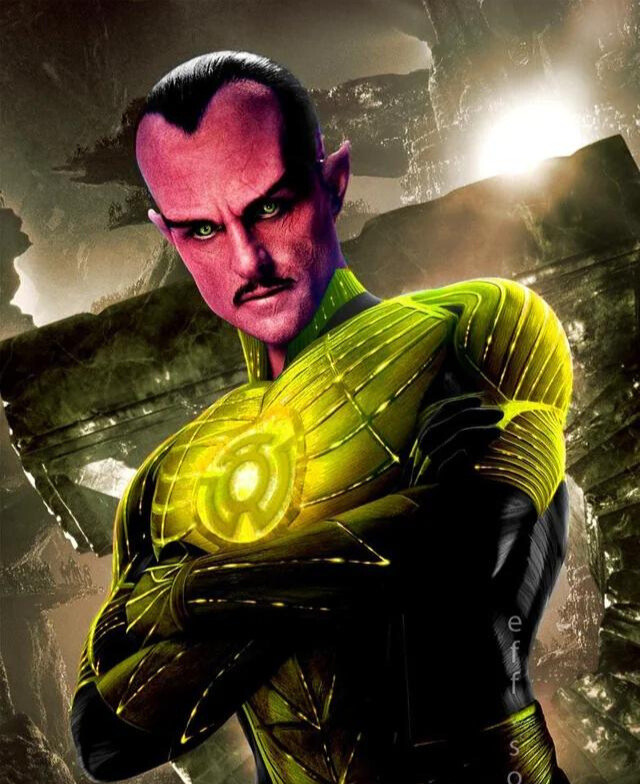

SINESTRO
 Thaal Sinestro é um personagem importante e um supervilão do Universo DC e inimigo do Lanterna Verde. Sua primeira aparição foi em Green Lantern Vol.2 #7 (Julho-Agosto 1961),[1] criado por John Broom e Gil Kane. Sinestro é um ex-soldado da Tropa dos Lanternas Verdes que usa um anel amarelo que ganha poderes a partir do medo causado nos inimigos. Sinestro apareceu em vários quadrinhos e adaptações, sendo um dos vilões da Legião do Mal de Super Amigos. Seu visual foi inspirado no ator britânico David Niven, empunha uma duplicata amarela do anel padrão da Tropa dos Lanternas Verdes, mas não tem vulnerabilidade ao amarelo. Assim como o anel dos lanternas verdes, o anel de Sinestro precisa ser recarregado em uma bateria amarela, enquanto é feito o juramento de sua tropa. O anel é feito da raríssima substancia Qwardamita, existente somente no Universo de Antimatéria. O anel de Sinestro se diferente porque é capaz de controlar os outros anéis da Tropa Sinestro, como é revelado na Noite Mais Densa.